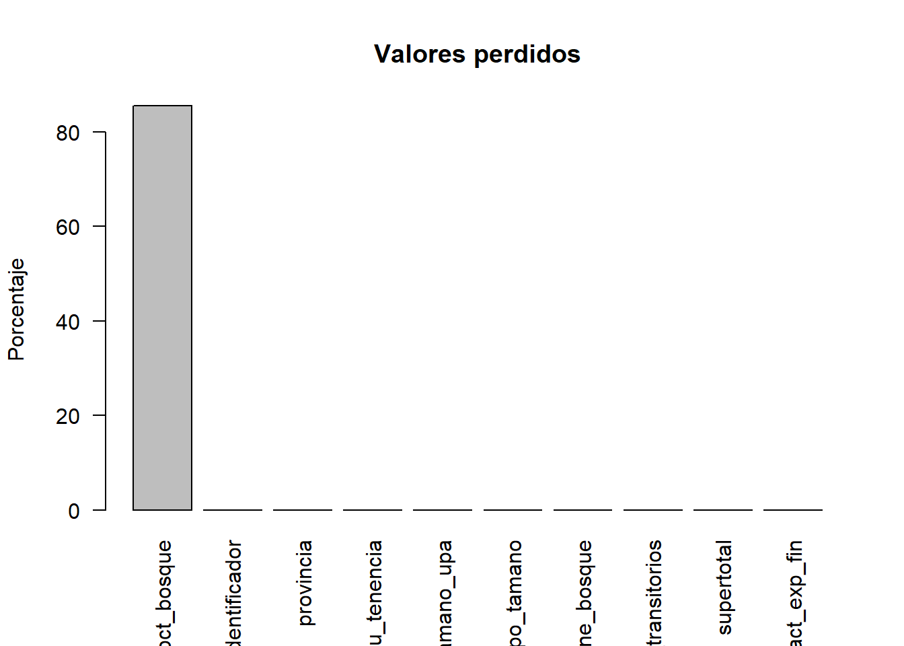
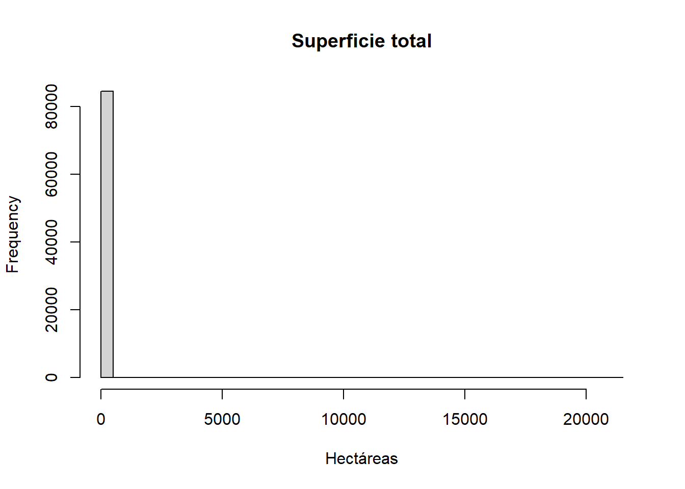
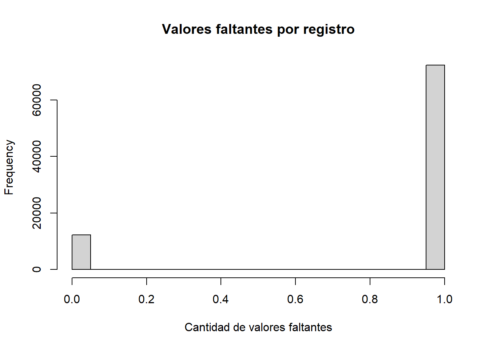

library(dplyr)
library(here)
library(knitr)
sunac <- readRDS(
here(
"datos",
"procesado",
"ESPAC_2025",
"sunac_transformado.rds"
)
)16 Calidad de los datos
Objetivos de aprendizaje
Al finalizar este capítulo, el lector será capaz de:
- Comprender el concepto de calidad de datos dentro de la investigación reproducible.
- Identificar las principales dimensiones de calidad utilizadas en la literatura científica.
- Evaluar la completitud, unicidad y consistencia de una base de datos.
- Diagnosticar problemas potenciales de calidad utilizando R.
- Construir indicadores básicos de calidad para una operación estadística.
- Interpretar métricas de calidad utilizando información real de la ESPAC 2025.
16.1 Introducción
Toda investigación científica depende de la calidad de los datos utilizados para producir evidencia. La calidad de los datos constituye uno de los pilares fundamentales de toda investigación reproducible. Un análisis estadístico sofisticado no puede compensar deficiencias importantes en la información de entrada. Por esta razón, la evaluación de la calidad de los datos constituye una etapa fundamental dentro del proceso de investigación reproducible (Pipino et al., 2002; Wang & Strong, 1996).
En términos generales, la calidad de los datos hace referencia al grado en que la información resulta adecuada para el propósito para el cual será utilizada. Un conjunto de datos puede ser técnicamente correcto y, sin embargo, no ser suficientemente completo, consistente o preciso para responder determinadas preguntas de investigación (Redman, 1998).
En la práctica, los investigadores deben evaluar sistemáticamente la calidad de sus datos antes de realizar análisis descriptivos, construir indicadores o estimar modelos estadísticos. Esta evaluación permite detectar problemas potenciales y documentar adecuadamente las limitaciones de la información disponible.
En este capítulo utilizaremos nuevamente la base de datos de la Encuesta de Superficie y Producción Agropecuaria Continua (ESPAC) 2025 para ilustrar procedimientos de evaluación de calidad de datos mediante R.
16.2 ¿Qué entendemos por calidad de datos?
La literatura especializada reconoce que la calidad de los datos es un concepto multidimensional. No existe una única característica que determine si una base de datos es de alta o baja calidad. Más bien, diferentes dimensiones deben evaluarse conjuntamente para comprender las fortalezas y limitaciones de la información disponible (Wang & Strong, 1996).
Desde una perspectiva aplicada, una base de datos de calidad debe:
- Contener información suficiente.
- Presentar registros coherentes.
- Mantener estructuras consistentes.
- Permitir la identificación adecuada de las unidades de análisis.
- Representar adecuadamente el fenómeno estudiado.
La calidad de los datos no es una característica absoluta. Depende del contexto de uso y de los objetivos específicos de investigación (Pipino et al., 2002).
16.3 Calidad de datos e investigación reproducible
La investigación reproducible exige que los resultados puedan ser reconstruidos utilizando los mismos datos y procedimientos (Gandrud, 2015; Peng, 2011).
Sin embargo, la reproducibilidad no garantiza por sí misma que los datos sean de alta calidad.
Un estudio puede ser completamente reproducible y aun así presentar problemas derivados de:
- Valores perdidos.
- Registros duplicados.
- Errores de codificación.
- Inconsistencias lógicas.
- Datos incompletos.
Por esta razón, la evaluación de calidad constituye un complemento indispensable de la reproducibilidad científica.
16.4 Principales dimensiones de calidad
Diversos autores han propuesto marcos conceptuales para evaluar la calidad de los datos (Pipino et al., 2002; Redman, 1998; Wang & Strong, 1996).
En este libro trabajaremos con cinco dimensiones fundamentales:
16.4.1 Completitud
La completitud evalúa la presencia de información necesaria para el análisis.
Una variable presenta problemas de completitud cuando contiene una elevada proporción de valores faltantes.
Por ejemplo:
Ingreso mensual = NA
Edad = NA
Provincia = NAUna base con numerosos valores faltantes puede limitar la capacidad analítica del investigador.
16.4.2 Unicidad
La unicidad hace referencia a la ausencia de registros duplicados.
Idealmente, cada unidad de análisis debería estar representada una única vez dentro de una base de datos.
La existencia de duplicados puede generar sesgos en estimaciones descriptivas y modelos estadísticos.
16.4.3 Consistencia
La consistencia evalúa si los datos respetan reglas lógicas y relaciones esperadas entre variables.
Por ejemplo:
Superficie de bosque > Superficie totalEsta situación sería inconsistente desde un punto de vista lógico.
16.4.4 Validez
La validez verifica que los valores observados se encuentren dentro de rangos permitidos.
Por ejemplo:
Porcentaje de bosque = 150%Este valor sería inválido porque supera el límite teórico de 100%.
16.4.5 Exactitud
La exactitud evalúa el grado en que los datos representan correctamente la realidad observada.
Esta dimensión suele ser la más difícil de evaluar debido a que requiere contrastar la información con fuentes externas o procedimientos de validación independientes (Redman, 1998).
16.5 Cargando la base de trabajo
Para evaluar la calidad de los datos utilizaremos la base transformada construida en el capítulo anterior.
16.6 Evaluación inicial de la base
Antes de analizar dimensiones específicas de calidad es conveniente obtener una visión general de la información disponible.
data.frame(
Registros = nrow(sunac),
Variables = ncol(sunac)
) |>
kable(
caption = "Dimensiones generales de la base analítica"
)| Registros | Variables |
|---|---|
| 84538 | 10 |
La tabla presenta el número total de observaciones y variables disponibles para el análisis.
Estos indicadores permiten verificar rápidamente que la base fue cargada correctamente y facilitan la documentación del proyecto.
16.7 Explorando la estructura de los datos
glimpse(sunac)Rows: 84,538
Columns: 10
$ Identificador <chr> "01135101000330001", "01135101000330001", "01135101…
$ provincia <fct> AZUAY, AZUAY, AZUAY, AZUAY, AZUAY, AZUAY, AZ…
$ su_tenencia <fct> DUEÑO, DUEÑO, DUEÑO, DUEÑO, DUEÑO, DUEÑO, DUEÑO, DU…
$ tamano_upa <chr> "Pequeña", "Micro", "Mediana", "Micro", "Pequeña", …
$ grupo_tamano <chr> "Pequeños productores", "Pequeños productores", "Me…
$ tiene_bosque <chr> "Sí", "Sí", "No", "No", "No", "Sí", "No", "Sí", "No…
$ tiene_transitorios <chr> "No", "No", "No", "No", "No", "No", "No", "No", "No…
$ pct_bosque <dbl> 100, 100, NA, NA, NA, 100, NA, 100, NA, NA, NA, NA,…
$ supertotal <dbl> 2.7616, 0.7581, 5.1941, 0.2862, 2.5763, 0.8191, 3.3…
$ fact_exp_fin <dbl> 66.37009, 66.37009, 66.37009, 66.37009, 66.37009, 6…La función glimpse() permite identificar:
- Variables disponibles.
- Tipos de datos.
- Variables categóricas.
- Variables numéricas.
- Variables derivadas construidas durante el proceso de transformación.
Esta inspección inicial constituye una práctica recomendada antes de iniciar cualquier análisis formal (Wickham, 2014).
16.8 Perfil general de calidad
Podemos construir un primer resumen de calidad.
perfil_calidad <- data.frame(
registros = nrow(sunac),
variables = ncol(sunac),
identificadores_unicos =
length(unique(sunac$Identificador))
)
perfil_calidad |>
kable(
caption = "Perfil general de calidad de la base"
)| registros | variables | identificadores_unicos |
|---|---|---|
| 84538 | 10 | 38228 |
La tabla resume algunos indicadores básicos que permiten comprender la estructura general de la información disponible.
16.9 Evaluando la unicidad de los registros
Una pregunta importante consiste en determinar si existe correspondencia entre el número de registros y el número de identificadores únicos.
data.frame(
registros_totales = nrow(sunac),
identificadores_unicos =
length(unique(sunac$Identificador))
) |>
kable(
caption = "Evaluación de unicidad de identificadores"
)| registros_totales | identificadores_unicos |
|---|---|
| 84538 | 38228 |
La diferencia entre ambas cantidades no necesariamente representa un problema.
En la ESPAC, una misma unidad productiva puede generar múltiples registros debido a la estructura de captura de información.
Por esta razón, la evaluación de calidad siempre debe realizarse considerando el diseño metodológico de la operación estadística (Groves et al., 2009).
16.10 Frecuencia de registros por identificador
Podemos identificar productores con múltiples registros.
sunac |>
count(Identificador) |>
arrange(desc(n)) |>
head(10) |>
kable(
caption = "Identificadores con mayor número de registros"
)| Identificador | n |
|---|---|
| 06065004000940022 | 51 |
| 21045160000990001 | 34 |
| 21015802011420001 | 29 |
| 17015463000993667 | 25 |
| 08056060000990008 | 23 |
| 06035004000430001 | 22 |
| 08055760000990086 | 21 |
| 01015103004380004 | 20 |
| 04016101050450002 | 20 |
| 18015501047960004 | 20 |
La tabla permite comprender cómo se distribuyen los registros dentro de la base de datos.
16.11 Interpretación de los resultados
Hasta este punto hemos realizado una evaluación preliminar de calidad.
Los resultados muestran:
- La dimensión general de la base.
- La estructura de variables disponibles.
- El número de identificadores únicos.
- La distribución de registros por unidad de análisis.
En la siguiente sección profundizaremos en la evaluación de completitud mediante el análisis de valores perdidos y construiremos indicadores cuantitativos de calidad para cada variable.
16.12 Evaluando la completitud de los datos
La completitud constituye una de las dimensiones más importantes de la calidad de los datos. Una base de datos incompleta puede limitar la capacidad de análisis y afectar la validez de los resultados obtenidos (Pipino et al., 2002; Wang & Strong, 1996).
En términos prácticos, la completitud se evalúa mediante la identificación de valores faltantes.
En R, los valores perdidos se representan mediante el símbolo:
NASin embargo, no todos los valores perdidos representan errores. En muchas operaciones estadísticas existen preguntas que únicamente aplican a determinados grupos de observación.
Por esta razón, antes de eliminar o imputar valores faltantes es necesario comprender el contexto metodológico de la información (Little & Rubin, 2019; Van Buuren, 2018).
16.13 Cuantificando valores perdidos
Podemos calcular la cantidad de valores faltantes para cada variable.
na_variables <- colSums(
is.na(sunac)
)
data.frame(
variable = names(na_variables),
valores_perdidos = as.numeric(na_variables)
) |>
arrange(
desc(valores_perdidos)
) |>
head(10) |>
kable(
caption = "Variables con mayor número de valores perdidos"
)| variable | valores_perdidos |
|---|---|
| pct_bosque | 72324 |
| Identificador | 0 |
| provincia | 0 |
| su_tenencia | 0 |
| tamano_upa | 0 |
| grupo_tamano | 0 |
| tiene_bosque | 0 |
| tiene_transitorios | 0 |
| supertotal | 0 |
| fact_exp_fin | 0 |
La tabla permite identificar rápidamente las variables con menor nivel de completitud.
16.14 Porcentaje de valores perdidos
La cantidad absoluta de valores faltantes puede resultar difícil de interpretar.
Por esta razón, suele ser más útil calcular porcentajes.
porcentaje_na <- round(
colMeans(
is.na(sunac)
) * 100,
2
)
data.frame(
variable = names(porcentaje_na),
porcentaje_na = as.numeric(
porcentaje_na
)
) |>
arrange(
desc(porcentaje_na)
) |>
head(10) |>
kable(
caption = "Variables con mayor porcentaje de valores perdidos"
)| variable | porcentaje_na |
|---|---|
| pct_bosque | 85.55 |
| Identificador | 0.00 |
| provincia | 0.00 |
| su_tenencia | 0.00 |
| tamano_upa | 0.00 |
| grupo_tamano | 0.00 |
| tiene_bosque | 0.00 |
| tiene_transitorios | 0.00 |
| supertotal | 0.00 |
| fact_exp_fin | 0.00 |
Los porcentajes permiten comparar variables independientemente del tamaño de la base de datos.
16.15 Visualizando la completitud
Las representaciones gráficas facilitan la interpretación de los resultados.
porcentaje_na |>
sort(
decreasing = TRUE
) |>
head(10) |>
barplot(
las = 2,
ylab = "Porcentaje",
main = "Valores perdidos"
)
La figura permite identificar visualmente cuáles son las variables que requieren mayor atención durante el análisis.
16.16 Interpretando los valores perdidos
La presencia de valores perdidos no implica necesariamente problemas de calidad.
Por ejemplo, muchas variables relacionadas con bosques, cultivos específicos o actividades pecuarias únicamente aplican a ciertos productores.
Esto significa que numerosos valores faltantes representan ausencia legítima de información y no errores de captura.
Por esta razón, la interpretación de los NA siempre debe realizarse conjuntamente con la documentación metodológica de la encuesta (Groves et al., 2009).
16.17 Evaluando la consistencia de los datos
La consistencia se refiere al cumplimiento de relaciones lógicas entre variables (Redman, 1998).
Un dato inconsistente no necesariamente es un valor faltante. Puede tratarse de un valor existente que contradice reglas conceptuales o matemáticas.
Por ejemplo:
Superficie de bosque > Superficie totalEsta situación sería inconsistente porque una parte no puede ser mayor que el todo.
16.18 Verificando consistencia de superficies
Podemos evaluar esta condición dentro de la ESPAC.
inconsistencias_bosque <- sum(
sunac$us_montesha >
sunac$supertotal,
na.rm = TRUE
)
data.frame(
inconsistencias =
inconsistencias_bosque
) |>
kable(
caption = "Registros con superficie de bosque superior a la superficie total"
)| inconsistencias |
|---|
| 0 |
Idealmente el número de inconsistencias debería ser igual a cero.
16.19 Verificando porcentajes inválidos
En el capítulo anterior construimos una variable denominada:
pct_bosqueDado que representa un porcentaje, sus valores deberían encontrarse entre 0 y 100.
Podemos verificar esta condición.
sum(
sunac$pct_bosque > 100,
na.rm = TRUE
)[1] 0Si el resultado es mayor que cero, existirían observaciones que requieren revisión.
16.20 Distribución de la superficie total
Otra estrategia útil consiste en analizar distribuciones.
hist(
sunac$supertotal,
breaks = 50,
main = "Superficie total",
xlab = "Hectáreas"
)
La distribución permite identificar posibles anomalías y valores extremos.
16.21 Evaluación de valores extremos
Los valores extremos pueden representar:
- Errores de captura.
- Unidades de análisis excepcionales.
- Características reales del fenómeno estudiado.
Por esta razón, no deben eliminarse automáticamente (Wilson et al., 2017).
Podemos identificar las observaciones con mayor superficie.
sunac |>
arrange(
desc(supertotal)
) |>
select(
Identificador,
supertotal
) |>
head(10) |>
kable(
caption = "Observaciones con mayor superficie total"
)| Identificador | supertotal |
|---|---|
| 09105056000993426 | 21468.92 |
| 09235056000993424 | 17214.49 |
| 14045264000994192 | 16000.00 |
| 12015552000990149 | 11030.00 |
| 21045160000990001 | 6635.94 |
| 14015364000991633 | 6000.00 |
| 08055460000990006 | 5876.99 |
| 03045056000993427 | 5874.00 |
| 08055760000990004 | 4500.00 |
| 10015056000993442 | 3953.00 |
La revisión de estos registros permite determinar si los valores observados son plausibles.
16.22 Perfil de completitud de la base
Podemos construir un indicador agregado de completitud.
indice_completitud <-
round(
mean(
!is.na(
as.matrix(sunac)
)
) * 100,
2
)
data.frame(
completitud =
indice_completitud
) |>
kable(
caption = "Índice general de completitud de la base"
)| completitud |
|---|
| 91.44 |
Este indicador resume el porcentaje de celdas que contienen información disponible.
16.23 Interpretación de los resultados
La evaluación realizada hasta este punto permite responder varias preguntas importantes:
- ¿Qué tan completa es la base?
- ¿Qué variables presentan mayores niveles de ausencia de información?
- ¿Existen inconsistencias lógicas?
- ¿Se observan valores potencialmente anómalos?
- ¿Qué tan confiable parece la información para análisis posteriores?
La respuesta a estas preguntas constituye el primer paso para construir un reporte formal de calidad de datos.
En la siguiente sección construiremos indicadores integrales de calidad y elaboraremos un informe reproducible de diagnóstico de la ESPAC 2025.
16.24 Construcción de indicadores integrales de calidad
Hasta este punto hemos evaluado distintas dimensiones de calidad por separado.
Sin embargo, en proyectos reales suele ser útil construir indicadores resumidos que permitan obtener una visión global del estado de una base de datos.
Estos indicadores facilitan la documentación metodológica y permiten monitorear la evolución de la calidad a lo largo del tiempo (Pipino et al., 2002; Wang & Strong, 1996).
16.25 Resumen general de calidad
Podemos construir una tabla que sintetice algunos indicadores fundamentales.
indicadores_calidad <- data.frame(
registros = nrow(sunac),
variables = ncol(sunac),
identificadores_unicos =
length(unique(sunac$Identificador)),
completitud_porcentaje =
round(
mean(
!is.na(
as.matrix(sunac)
)
) * 100,
2
)
)
indicadores_calidad |>
kable(
caption = "Indicadores generales de calidad de datos"
)| registros | variables | identificadores_unicos | completitud_porcentaje |
|---|---|---|---|
| 84538 | 10 | 38228 | 91.44 |
La tabla resume las principales características de la base y constituye un primer diagnóstico general.
16.26 Calidad de variables clave
En muchos estudios no todas las variables tienen la misma importancia.
Por ello resulta conveniente evaluar específicamente aquellas variables que serán utilizadas posteriormente en el análisis.
En nuestro caso seleccionaremos:
supertotaltamano_upatiene_bosquepct_bosquefact_exp_fin
variables_clave <- c(
"supertotal",
"tamano_upa",
"tiene_bosque",
"pct_bosque",
"fact_exp_fin"
)
data.frame(
variable = variables_clave,
porcentaje_na =
round(
colMeans(
is.na(
sunac[
variables_clave
]
)
) * 100,
2
)
) |>
kable(
caption = "Porcentaje de valores perdidos en variables clave"
)| variable | porcentaje_na | |
|---|---|---|
| supertotal | supertotal | 0.00 |
| tamano_upa | tamano_upa | 0.00 |
| tiene_bosque | tiene_bosque | 0.00 |
| pct_bosque | pct_bosque | 85.55 |
| fact_exp_fin | fact_exp_fin | 0.00 |
La calidad de estas variables es especialmente relevante porque serán utilizadas en capítulos posteriores.
16.27 Detección de registros incompletos
Otra medida útil consiste en identificar observaciones con múltiples valores faltantes.
na_por_fila <- rowSums(
is.na(sunac)
)
summary(
na_por_fila
) Min. 1st Qu. Median Mean 3rd Qu. Max.
0.0000 1.0000 1.0000 0.8555 1.0000 1.0000 Este resumen muestra cuántos valores faltantes existen por observación.
16.28 Distribución de valores faltantes por registro
hist(
na_por_fila,
breaks = 30,
main = "Valores faltantes por registro",
xlab = "Cantidad de valores faltantes"
)
La figura permite identificar si existen observaciones particularmente problemáticas.
16.29 Evaluación de duplicados
Los registros duplicados representan una fuente frecuente de problemas en bases de datos.
Podemos verificar si existen filas completamente repetidas.
duplicados <- sum(
duplicated(sunac)
)
data.frame(
registros_duplicados =
duplicados
) |>
kable(
caption = "Registros completamente duplicados"
)| registros_duplicados |
|---|
| 150 |
Idealmente el resultado debería ser cero.
16.30 Verificación de identificadores faltantes
Los identificadores constituyen la columna vertebral de cualquier base de datos.
sum(
is.na(
sunac$Identificador
)
)[1] 0La ausencia de identificadores puede dificultar procesos de agregación, seguimiento y validación.
16.31 Construcción de un reporte de calidad reproducible
Una de las ventajas de R y Quarto consiste en que los reportes de calidad pueden generarse automáticamente.
Por ejemplo, podemos crear una tabla consolidada.
reporte_calidad <- data.frame(
Indicador = c(
"Número de registros",
"Número de variables",
"Identificadores únicos",
"Duplicados",
"Completitud (%)"
),
Valor = c(
nrow(sunac),
ncol(sunac),
length(unique(sunac$Identificador)),
sum(duplicated(sunac)),
round(
mean(
!is.na(
as.matrix(sunac)
)
) * 100,
2
)
)
)
reporte_calidad |>
kable(
caption = "Reporte resumido de calidad de datos"
)| Indicador | Valor |
|---|---|
| Número de registros | 84538.00 |
| Número de variables | 10.00 |
| Identificadores únicos | 38228.00 |
| Duplicados | 150.00 |
| Completitud (%) | 91.44 |
Este tipo de reportes resulta especialmente útil para auditorías, documentación técnica y proyectos colaborativos.
16.32 Buenas prácticas para garantizar calidad de datos
La calidad de los datos no debe evaluarse únicamente al final de un proyecto.
La literatura recomienda incorporar mecanismos de control durante todo el ciclo de vida de la investigación (Marwick et al., 2018; Wilson et al., 2017).
Entre las principales recomendaciones se encuentran:
- Mantener copias intactas de los datos originales.
- Documentar todas las transformaciones realizadas.
- Utilizar identificadores únicos.
- Verificar sistemáticamente valores faltantes.
- Revisar rangos válidos de las variables.
- Automatizar controles mediante scripts reproducibles.
- Mantener diccionarios de variables actualizados.
Estas prácticas reducen errores y mejoran la transparencia del proceso científico.
16.33 Calidad de datos y toma de decisiones
La calidad de los datos tiene implicaciones directas sobre la calidad de las decisiones derivadas de la investigación.
Indicadores mal construidos, variables inconsistentes o registros incompletos pueden conducir a conclusiones incorrectas y recomendaciones poco confiables (Redman, 1998).
Por esta razón, la evaluación de calidad debe considerarse una actividad permanente y no un procedimiento aislado.
16.34 Manos a la obra
Utilizando la base sunac_transformado.rds:
- Calcule la cantidad de valores faltantes por variable.
- Identifique las cinco variables con menor completitud.
- Calcule el porcentaje general de completitud de la base.
- Verifique si existen registros duplicados.
- Evalúe la existencia de inconsistencias entre superficie total y superficie de bosque.
- Construya una tabla resumen de indicadores de calidad.
- Interprete los resultados obtenidos.
- Documente todas las verificaciones realizadas.
16.35 Resumen del capítulo
La calidad de los datos constituye un componente fundamental de la investigación reproducible.
Durante este capítulo aprendimos a evaluar dimensiones clave como completitud, unicidad, consistencia y validez utilizando información real de la ESPAC 2025.
Asimismo, construimos indicadores cuantitativos de calidad, identificamos posibles problemas de información y desarrollamos reportes reproducibles para documentar el estado de una base de datos.
La evaluación sistemática de la calidad permite aumentar la confiabilidad de los análisis estadísticos y fortalece la credibilidad de los resultados obtenidos.
En el siguiente capítulo comenzaremos el análisis estadístico propiamente dicho mediante técnicas de estadística descriptiva que nos permitirán resumir, explorar e interpretar la información contenida en nuestras bases de datos.